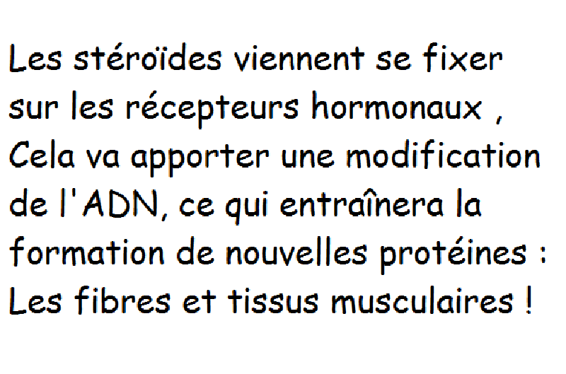

Ils existent dans le monde des produits qui peuvent améliorer l’Homme . Cela a toujours été un but convoité par les scientifiques et demandé par la population.Guérir des maladies , empêcher des drames , améliorer l’efficacité des autorités et sauveteurs, simplement améliorer notre quotidien, augmenter les capacités humaines créer des super-soldats ou allez jusqu’à rendre l’homme immortel . Cela réglerait beaucoup de problèmes .
Aujourd’hui l'homme veut améliorer ses capacités physiques notamment à travers la chirurgie esthétique. On peut améliorer nos capacités psychiques par la prise de drogues ou de médicaments dérivés pour accroître la concentration et la capacité de travail chez certains étudiants. Ou tout simplement à travers le dopage chez les sportifs ou la prise de drogues chez les militaires avant de partir au combat. La tentation de « booster ses capacités » existe et a toujours existé. Il faut se faire à l’idée que nous faisons partie d’une société qui envisage de plus en plus le corps humain comme « un outil améliorable ».
I-Amélioration par les substances
II- Utiliser la technologie pour augmenter nos capacités :
III-Modification du génotype
IV- Et au niveau de l'éthique ?1- Le retrait de la faiblesse, un déséquilibre pour l'Homme
Brève intro à la partie
Les stéroïdes anabolisants créés en usine, servent à imiter l’action de la testostérone de notre corps. Ils augmentent la croissance des muscles (effet anabolique) et favorisent les caractères sexuels secondaires masculins (effet androgénique).
Ces stéroïdes peuvent être prescrites par un médecin à des patients souffrant d’un manque de testostérone ou d’une maladie comme le cancer ou le SIDA. Quand ils sont utilisés par des athlètes, c’est pour accélérer le développement de leurs muscles.
Lorsque nous soulevons des poids plus lourds que d’habitude, nous créons une minuscule micro déchirure dans les fibres musculaires. Le processus naturel de réparation du corps répare cette déchirure, puis la compense largement en ajoutant des cellules plus grosses afin de construire une fibre plus forte : c’est ce qu’on appelle l’hypertrophie musculaire.
Avec le temps, ce processus répété de destruction et réparation aura comme résultat l’apparition de muscles plus gros, plus forts et plus résistants.
Ce processus est principalement assuré par la testostérone mais les stéroïdes peuvent l’accélérer. Une fois ingéré, le stéroïde androgène-anabolisant voyage par voie sanguine pour atteindre les tissus musculaires. Il est réceptionné par les cellules grâce à leurs récepteurs androgènes. Une fois dans les cellules musculaires, le stéroïde peut interagir avec l’ADN des cellules et stimuler le processus de synthèse des protéines qui favorisent la croissance du muscle.
Il n’y a pas seulement les coureurs et bodybuilders qui en utilisent , il peut aussi être utile aux footballeurs ou aux athlètes qui font du saut en hauteur par exemple. L’exercice intense produit du cortisol qui est l’agent du stress il peut causer des pertes de tissus musculaires et est à l’origine des courbatures.
Les stéroïdes androgènes anabolisants peuvent bloquer le cortisol en l’empêchant de se lier aux récepteurs cellulaires des muscles, ce qui diminue le processus de destruction. Moins de "rupture" musculaire signifie moins de fatigue musculaire, ce qui permet de récupérer plus rapidement entre deux actions ou rencontre sportive.
Les résultats sont beaux et les effets sont à première vu remarquables mais cela à un prix car il y a également de nombreux effets secondaires !
La majorité des auteurs des écrits sur les anabolisants ne sont pas des personnes très informées. Il s’agit soit de fanatiques anti-drogue recyclés qui ne comprennent pas vraiment l’énorme différence qui existe entre les drogues et les stéroïdes anabolisants, soit de personnes qui ont elles-mêmes recours aux stéroïdes.
Cette dernière catégorie a tendance (naturellement) à sous-estimer les dangers liés à l’utilisation de stéroïdes et à l’abus de ces substances.
La plupart des recherches sérieuses menées dans le domaine des stéroïdes androgènes anabolisants (SAA), qui sont en fait des dérivés de testostérone, l’ont été dans les années 60 et 70. Depuis, et surtout après 1990 (lorsque les Etats-Unis ont promulgué les lois anti-stéroïdes), on évite ce sujet comme la peste dans la plupart des cercles scientifiques. Nous ne pouvons donc nous fonder que sur un ensemble d’études scientifiques, d’expériences personnelles émanant de bodybuilders plus âgés et de l’observation de coachs expérimentés.
Divers stéroïdes entraînent des effets indésirables
Les SAA sont un groupe de substances. Celles-ci n’entraînent pas toutes les mêmes résultats et les mêmes effets indésirables. La liste qui suit détaille certains des stéroïdes les plus répandus ainsi que leurs effets indésirables les plus notoires, ils sont classés ci-après du plus dangereux au plus léger :
Très toxique pour le foie
Entraîne une forte inhibition de la testostérone et des dégâts au niveau des vaisseaux sanguins

Toxique pour le foie et entraîne une
inhibition de la testostérone
Entraîne une forte
inhibition de la testostérone
Entraîne une légère
inhibition de la testostérone
Entraîne une très légère
inhibition de la testostérone
Le terme « léger » a ici une valeur très relative de manière génétique : certains stéroïdes comme la boldénone peuvent engendrer des réactions très graves chez certaines personnes. De plus, il est important de savoir que la plupart des stéroïdes peuvent entraîner beaucoup d’autres symptômes, notamment la gynécomastie (apparition de poitrine d’apparence féminine chez les hommes du fait de l’activation directe ou indirecte de récepteurs d’oestrogènes), l’acné, la perte capillaire, les sautes d’humeur et les palpitations.
Inhibition de la testostérone :
L’inhibition de la testostérone, autrement dit une production diminuée de testostérone, affectera tôt ou tard tout consommateur de stéroïdes mais le corps réagit toujours à un apport de testostérone (ou de ses dérivés) par une diminution de sa production.
Cela est causé par un mécanisme appelé inhibition par contre-réaction : la production de toute hormone, dont la libération est régulée par l’hypothalamus (et cela inclut la testostérone), est limitée si le corps détecte des niveaux élevés de cette hormone ou de substance similaire dans l’organisme.
Ainsi, si par exemple vous vous injectez de l’énanthate de testostérone dans le muscle, vous envoyez également l’information à l’hypothalamus selon laquelle il y a trop de testostérone dans votre organisme et que sa production doit être arrêtée. Cependant la contre réaction est parfois plus forte pour certains stéroïdes (comme la nandrolone) que pour d’autres (oxandrolone). Le faible niveau de testostérone entraîne une réduction de la taille des testicules, une perte de libido, des sautes d’humeur et d’autres symptômes. L’inhibition peut être soit réversible, soit irréversible (si le stéroïde est trop puissant et utilisé pendant une période trop longue). Une inhibition irréversible de la testostérone veut dire que le corps ne sera plus jamais capable de produire de la testostérone, du fait d’un abus de SAA.
Il y a deux façons de combattre l’inhibition de la testostérone : prendre les stéroïdes selon des cycles et utiliser un traitement post-cycle.
Le concept de cycles veut simplement dire que vous arrêtez le traitement après plusieurs semaines et que vous le poursuivez après que la production de testostérone soit revenue à la normale. Généralement, les bodybuildeurs ne sont pas soumis à des tests médicaux et mettent en place un cycle selon leurs observations. Il existe des médicaments à effets hormonaux qui diminuent les hormones oestrogènes (hormones stéroïdes chez les femmes) et aident à augmenter la production de testostérone via une autre forme de contre-réaction. A noter qu’un traitement de ce type constitue une interférence avec le système hormonal et peut donc causer plus de mal que de bien.
Les stéroïdes anabolisants vendus sous forme de comprimés à avaler ont généralement été altérés chimiquement, ce qui fait que leur substance active traverse le foie sans être décomposée ou dégradée. Cette altération chimique est appelée alkylation 17-alpha. Les stéroïdes alkylés 17-alpha sont toujours toxiques pour le foie et cette toxicité dépend de la dose administrée.
En fait, beaucoup d’autres substances répandues provoquent des dommages au niveau du foie, selon les doses : les antalgiques, les anti-inflammatoires, les pilules contraceptives, et bien d’autres. Le problème avec les SAA est qu’ils sont consommés à des doses beaucoup trop élevées.
Le signe le plus fréquent de problèmes au foie est une augmentation des enzymes hépatiques. Un niveau élevé d’enzymes est toujours un signe de maladie au niveau de cet organe vital. Une inflammation ou même une nécrose du foie sont à considérer.
Dans des circonstances normales, une partie de la testostérone présente dans le corps est toujours convertie en “estradiol”, la principale hormone femelle .Mais la testostérone n’est pas la seule à subir ce processus de conversion en estradiol, c’est le cas de beaucoup de stéroïdes anabolisants. Cela pose un problème aux consommateurs de SAA, car pour être efficace en termes de croissance musculaire, la testostérone, et les autres stéroïdes, doit être prise à des doses très élevées. Ainsi, les bodybuilders ont souvent des niveaux accentués d’estradiol, ce qui entraîne des effets indésirables comme la croissance des seins chez les hommes (Gynécomastie), la rétention d’eau et l’accumulation de graisse, et différents effets psychologiques.
Certains stéroïdes anabolisants (comme la trenbolone) ne subissent pas cette transformation mais peuvent directement stimuler les récepteurs d’oestrogènes, entraînant ainsi les mêmes effets indésirables que l’estradiol en excès. On pourrait utiliser des substances qui ne sont pas affectées par ce phénomène mais les gains de masses musculaire ne combleront pas les attentes des consommateurs qui préfèrent souvent risquer les effets indésirables des ces stéroïdes qui subissent cette conversion même si le résultat est dû à la rétention d’eau et en partie à l’accumulation de graisse. Ainsi, même si la masse musculaire maigre ne croît pas, l’effet visuel peut être très impressionnant. Les effets indésirables liés aux oestrogènes sont généralement traités à l’aide de médicaments anti-oestrogènes. mais cela constitue une intrusion supplémentaire qui peut entraîner une contre-réaction et donc bien d’autres effets indésirables.
Les maladies cardiovasculaires (maladie du cœur et/ou des vaisseaux sanguins) sont souvent dues a un impact négatif que peuvent avoir certains stéroïdes anabolisants sur la lipoprotéine de haute densité (LHD). La LHD est en fait le « bon » cholestérol et il semble que les stéroïdes abaissent les niveaux de cette substance dans l’organisme, affectant ainsi le paysage lipidique global. Nous savons également que la nandrolone, un stéroïde anabolisant très populaire, endommage probablement certaines cellules des vaisseaux sanguins.
R.I. Wood est l’auteur de plusieurs études scientifiques qui affirment que les dérivés de la testostérone ont des propriétés assimilables à celles des opiacés. Autrement dit, ils provoqueraient la dépendance. C’est en effet une allégation très forte qui contredit ce qu’on sait au sujet de la testostérone et des hormones associées. Si c’était vrai, cela appuierait les lois qui classent les SAA dans le même groupe de substances que les narcotiques.
De plus certains des aliments du quotidien les plus banals, contiennent des éléments assimilables aux opiacés. Par exemple, le blé contient des exorphines de gluten. Le lait, quant à lui, contient des peptides de casomorphine. Ces deux substances sont des opioïdes qui suscitent la dépendance. Beaucoup de peptides semblables peuvent être trouvés dans d’autres aliments très répandus. Le café, le thé et le chocolat sont même connus pour provoquer une forte dépendance, probablement bien plus que la testostérone.
A côté de tous les effets secondaires connus relatifs à l’utilisation des stéroïdes simplement pour des raisons ergogéniques, il y a l’incertitude sur ce que vous prenez réellement. Car dans certains composés vendus sous le manteau en toute illégalité, se cachent parfois des stéroïdes vétérinaires réservés au bétail qui peuvent rapidement être fatals à tout être humain qui les avalerait avec confiance.


Pour conclure les stéroïdes ont a première vu des effets remarquables et nous permettent de développer rapidement notre masse musculaire, ou bien de récupérer plus rapidement entre deux efforts sportifs, mais vu tous les effets négatifs que cela engendre, on ne peut pas parler d'améliorer l'Homme ici. Néamoins les exemples suivant pourrait nous donner une idées de ce à quoi on pourrait s'attendre si on arriver à trouver une super stéroïde !


Introduction :
Forcé de purger une peine à perpétuité pour les crimes de son père, Bane est né et a grandi dans la prison souterraine, Peña Duro. Là, il se forge dans le pinacle du potentiel physique et mental tout cela sans voir la lumière du jour. Échappé à Gotham City, Bane s'oppose à Batman et est devenu célèbre comme "The Man Who Broke the Bat" soit l’homme qui a battu la chauve-souris.
Bane est un super-méchant de la série Batman. C’est un des seul à avoir battu Batman. Nous allons donc nous intéresser à son “pouvoir”.
Tout d’abord il faut savoir que Bane n’as pas de super pouvoir comme Superman ou Thor. Il bénéficie naturellement d’un physique hors-normes et d’une intelligence exceptionnelle même si cela reste dans le domaine de l’humain. Pour rivaliser avec Batman, il s’injecte des super-steroide directement dans le cortex du cerveau grâce à son masque.
Il est considéré comme une stéroïde superbe appliquable à l'Homme, ce qui est logique scientifiquement parlant. "Stéroïdes anabolisants androgènes sont des hormones qui augmentent la masse musculaire globale et ont un effet similaires à la testostérone". Une fois que le stéroïde est dans le système, il active un récepteur qui existe dans les tissus musculaires. Ce complexe de récepteur activé se déplace ensuite dans le noyau de la cellule et se tourne sur les gènes qui font poussé plus de tissus musculaires. Cela a pour résultat d'augmenter le volume musculaire et sa résistance, ce qui est comparable aux effets de la drogue dans les bandes dessinées.
Dans d’autres version de Batman, le venom est amélioré et on l’appelle alors titan.
Il faut savoir que le venom injecté à de nombreuses reprises, a le même effet qu’une drogue comme la cocaïne. Cela entraîne une très grande dépendance et ces stéroïdes ont des effets très néfastes sur le corps.
Le cas de Bane est particulièrement intéressant. Il serait donc capable de s’injecter des super stéroïdes comme le venom afin d’améliorer nos capacités. Le venom étant un produit fictif il faut voir si il existe un produits équivalent.
Certains produits comme :
-T3 Cytomel Liothyronine Sodium
-Dianabol Methandienone
-ClebuterolHCL
-Androlic
-Anavar
-Androlic Oxymetholone
-Winstrol
-Halotestin
-stéroïde oral Androlic
Pourraient correspondre d'un point de vu structural et au niveau des effets mais on retrouve là encore les effets indésirables et ça n'aurait sûrement pas cet effet la :
Ajouter le texte
Brève intro
Ajouter le texte
Brève intro
Ajouter texte
Ajouter texte
Ajouter texte
Brève intro
Ajouter le texte
Ajouter le texte